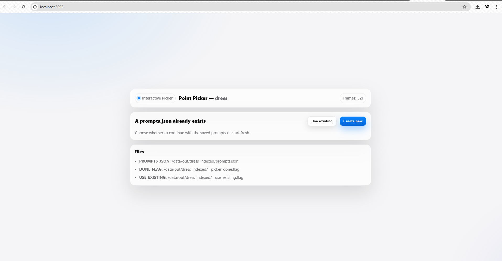
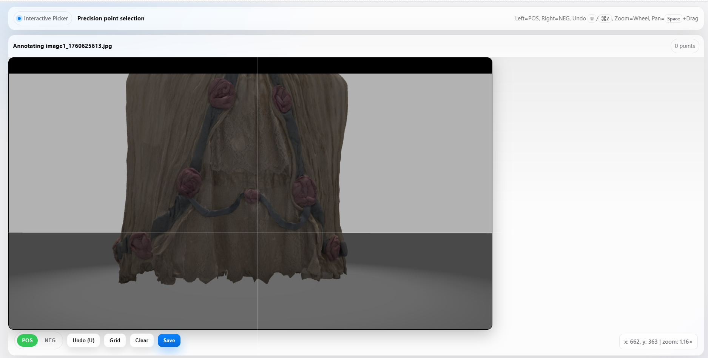
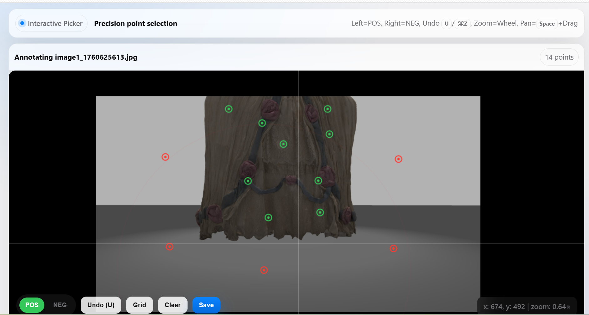

SAM2 Manual — Interactive Point Picker
The SAM2 module handles the segmentation step of the pipeline.
When you run the full pipeline using:
./run_pipeline.sh <dataset_name>
SAM2 automatically launches a browser-based interface on:
[http://localhost:8092](http://localhost:8092)
This interface allows you to annotate the dataset using interactive point picking. It is the only step where the user provides manual input.
1. Point Picker Interface Overview
When the interface opens, you will see a screen like the one below:

- Inspect each frame of your dataset
- Add foreground points on the object
- Add background points on unwanted regions
- Save the prompts (
prompts.json) used for mask generation
SAM2 supports two modes, but the pipeline uses:
** Interactive Picker (recommended)**
2. First-Time Use
When processing a dataset for the first time, the following files do not exist yet:
SAM2/data/output/<dataset_name>/prompts.json
SAM2/data/output/<dataset_name>/__picker_done.flag
So SAM2 will only show:
Create new
This means you must annotate the dataset manually:
- Click inside the image to add foreground points
- Add background points to remove clutter
- Repeat for all images
- Click “Save” at the end
SAM2 will automatically generate:
SAM2/data/output/<dataset_name>/prompts.json
SAM2/data/output/<dataset_name>/__picker_done.flag
These files store your segmentation instructions.
2.1 Annotating New Points (Foreground / Background)
If you choose Create new, SAM2 will guide you through the full manual annotation process. You will first see the annotation interface:

Here you can click on the image and define which areas belong to the object (foreground) and which belong to the background.
🟢 Foreground vs 🔴 Background Points
SAM2 uses two types of points:
| Click | Color | Meaning |
|---|---|---|
| Left click | 🟢 Green | Foreground (object to keep) |
| Right click | 🔴 Red | Background (remove this area) |
Example:

- Use right-click to add green points on the object
- Use right-click to add red points on background or areas to exclude
- Use the mouse wheel to zoom
- Hold Space + Drag to pan
- Press U or click Undo to remove the last point
Once you've placed your points, click Save. SAM2 will generate a mask preview.
Preview Generation
After clicking Save, the system shows:

This stage computes the segmentation based on the points you provided.
Reviewing Several Masked Frames
SAM2 then displays a gallery of sample frames with masks applied:

Here you should check:
- If the mask correctly follows the object
- If important details are preserved
- If background is eliminated properly
- If the mask quality is acceptable across multiple frames
If the result is not good, click Start over and refine your points.
If the result looks correct, click Looks good, continue.
Final Confirmation
Once the masks are accepted, SAM2 displays a confirmation message:

At this point:
- Your prompts have been saved
- The
prompts.jsonand__picker_done.flagfiles are created - The pipeline continues automatically (COLMAP starts next)
You can safely close the browser tab and return to the terminal.
3. Using Existing Prompts (Second Run)
If a previous annotation exists, the picker will detect these files:
prompts.json
__picker_done.flag
Then the interface will show two buttons:
Use existing
Loads your saved points automatically.
Create new
Starts annotation from scratch and overwrites the old prompts.
This allows you to redo segmentation only when needed, instead of repeating the entire process.
4. Files Created by SAM2
After annotation, SAM2 generates the following directory structure:
SAM2/data/output/<dataset_name>/
├── prompts.json
├── __picker_done.flag
├── __use_existing.flag (created only if "Use existing" is selected)
├── masks/
└── masked_images/
File Descriptions
| File | Purpose |
|---|---|
| prompts.json | Stores all user clicks for segmentation |
| __picker_done.flag | Indicates that annotation is complete |
| __use_existing.flag | Indicates that old prompts should be reused |
| masks/ | Binary masks generated from SAM2 |
| masked_images/ | Images multiplied by the mask, used by COLMAP |
5. What Happens After Point Picking
Once the annotation step is done:
- SAM2 generates masks
- SAM2 generates masked images
- The pipeline automatically continues to COLMAP
You do not need to run anything manually.
6. Tips for Best Mask Quality
- Add 3–7 foreground points on the object
- Add background points for shadows, reflections, or clutter
- Zoom into edges to improve accuracy
- Check frames with different lighting or unusual angles
- Make sure the object is not clipped by the mask
Even a few accurate prompts dramatically improve reconstruction quality.
7. Troubleshooting
❗ The GUI does not open
Try manually visiting:
[http://127.0.0.1:8092](http://127.0.0.1:8092)
If it still fails:
- Check that no other app uses port 8092
- Restart the pipeline
- Clear browser cache
❗ Masks look incorrect
- Select Create new and re-annotate
- Add more foreground/background points
- Focus on difficult frames (shiny, dark, motion blur)
8. Summary
The SAM2 Interactive Picker is the only manual step of the pipeline.
Once annotation is complete, the rest of the reconstruction process is fully automatic.
You are now ready to proceed to:
COLMAP Manual
SuGaR Optimization Manual